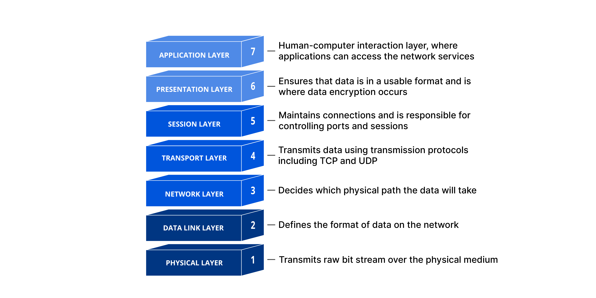

15. Networking Fundamentals#
Networking is important to computer science, and big enough to be its own focus and focus of study. Networking forms the backbone of modern computing, allowing for communication between devices and systems across the globe. You want to get an HTTP response for an API? That’s networking. You want to connect to a server, or dealing with ports? Networking. You want to work on the same shared doc on GoogleDocs? Guess what, that works because of networking. It’s the basis of how interconnected computing devices can share data and resources with each other- which is super important for how we share on the internet! These networked devices use a system of rules, called communications protocols, to transmit information over physical or wireless technologies. In this chapter, we will cover some networking fundamentals.
15.1. Networking Components#
15.1.1. OSI Model#
Networking has many levels, some of which are how different types of software interact with each other, and some of how software interacts with hardware. The Open Systems Interconnection model or OSI provides us with a framework of how to handle network communication in layers. We will be looking at the layers from the server side.

Image Source: https://www.cloudflare.com/it-it/learning/ddos/glossary/open-systems-interconnection-model-osi/
Physical Layer:
The physical layer focuses on (surprise) the physical layer between two devices. It transfers raw data using bits (think 0s and 1s). It also handles a lot of the management of those bits in different ways. One way is bit synchronization, where a clock synchronizes the sending of bits between the sender and the reciever, as well as the transmission rate, the number of bits per second.
Data Link Layer:
The data link layer has two main parts. The first part is the “medium access control,” which uses the MAC addresses (which we explain more in depth later in this chapter) from the network devices to transmit data between them. The second part is the “logical link layer,” which manages flow control, and does error checking on data transmission. This is often referred to as node-to-node data transfer.
Network Layer:
This layer primarily focuses on three things: packetizing, routing, and forwarding. Packetizing does what it sounds like, it packs data into packets that make it transmittable. Routing works like a navigation service, finding the most efficient path for the data packets to move. The last step is forwarding, moving the packets down the path allotted. In shorter terms, it moves the data down a physical path.
Transport Layer:
The transport layer manages network traffic between clients and receivers to ensure complete data transfers, as it deals with error correction. Transport-layer protocols such as TCP and UDP (we will talk about these protocols later in the chapter) are used to manage the volume of data through load balancing, where the traffic is sent, and at what rate at which it is sent at.
Session Layer:
The Session Layer manages and controls the sessions or dialogues, between two communicating devices or applications. It’s responsible for establishing, maintaining, and terminating connections between different sources. It also deals with synchronizing data from different sources.
Presentation Layer:
The Presentation Layer, A.K.A the syntax layer. This often paired closely with the Session Layer, is focused on translating data. It helps format and encrypt data for the network. For encryption and decryption it uses protocols like SSL/TLS (which we will talk about later in this chapter) to ensure secure transmission. This layer also manages data compression, reducing the number of bits that need to be transmitted and decompressing the data at the receiving end.
print("Repeat after me... The application layer is not the same as an application!")
Repeat after me... The application layer is not the same as an application!
Application Layer:
The Application Layer deals with data exchange between different applications, ensuring that the correct data is delivered to the appropriate application. It allows users to interact with the network through various protocols such as (Hypertext Transfer Protocol) HTTP for web browsing, file transfer protocol (FTP) for file transfers, and simple mail transfer protocol (SMTP) for email.
Most people who build software are focused on layers 5-7, because they are important to application-level interactions, like session management, data presentation, and application protocols.
If you want to improve your understanding of the OSI model, this site: https://osi-model.com/ is a great place to visualize and explain the layers of the model.

Image Source: https://anamul-haque.medium.com/what-is-the-osi-model-66758c44c896
15.1.2. TCP/IP Model#
Image Source: https://www.shiksha.com/online-courses/articles/osi-vs-tcp-ip-model-whats-the-difference/
The TCP/IP model, or Transmission Control Protocol/Internet Protocol model, is a framework like the OSI model that deals with the movement of data across different devices. Like the OSI model, it is organized by layers, but the organization itself is different from the OSI model’s organization. We will go through TCP/IP’s four layers, and their functions here:
15.2. Networking Potpourri#
Let’s go through some important concepts in networking.
15.2.1. Dealing with IP Addresses, MAC Addresses, and Subnets#
An IP address (Internet Protocol address) is a unique identifier assigned to each device connected to a network. It facilitates the routing of data packets (data packets are a small unit of information that is sent over a network, like the internet, from one device to another) between different devices over the internet. IP addresses come in two versions: IPv4 (this looks like: 192.168.1.1) and IPv6 (and this looks like: 2001:0db8:85a3:0000:0000:8a2e:0370:7334). IPv4 addresses are 32-bit, while IPv6 addresses are 128-bit, which gives you a much larger address space!

Image Source: https://www.zenarmor.com/docs/network-basics/what-is-ip-address
#python has a built in socket library
import socket
#we will get the host name of the local computer
host = socket.gethostname()
#we will get the IP address using the host name
ip_address = socket.gethostbyname(host)
print(f"Hostname: {host}")
#this would print my IP address!
#but let's not do that (for security reasons)
#try out this code locally and uncomment it if you want to see yours :)
#print(f"IP Address: {ip_address}")
Hostname: memalhot-thinkpadp1gen3.rmtusnj.csb
Or, if you don’t want to run that code snippet, you can check out this site: https://whatismyipaddress.com/
Now that we know about IP addresses, let’s look at MAC addresses. A MAC address (Media Access Control address) is a unique code given to every network device, like your laptop or phone. It helps identify each device on a local network and is written in a format like this: 00:1A:2B:3C:4D:5E. It’s written in 12 character alphanumeric address, as you have now seen! It’s often used in technology like bluetooth, ethernet, or wifi. Unlike IP addresses, which can change, MAC addresses always stay the same. They’re also often referred to as physical addresses or burned in addresses because are assigned by the manufacturer of the device.
A subnet, or subnetwork, is a way to divide a larger network into smaller sections. Imagine a big office building with separate rooms for different teams; each room is a subnet within the building. Subnets use something called a subnet mask to decide how big each section is and how many IP addresses it can have. This division helps make the network work better and keeps it more secure by reducing traffic and controlling where messages are sent. Continuining with our office analogy, you wouldn’t want to send every message about a company to the CEO. The CEO would be overwhelmed and wouldn’t necessarily give you the best response. Whereas if you reach out to a smaller office in the company, the response will be faster and better.
Image Source: https://medium.com/unicorn-ultra/what-is-subnet-from-simple-partitions-to-complex-chains-359ebccf520d
15.2.2. Network Address Translation (NAT)#
Network Address Translation is a technique used to modify network address information in IP packet headers while in transit across a routing device. NAT is commonly used to map a single public IP address to multiple private IP addresses within a local network. This allows multiple devices to share a single public IP address, conserving the limited number of available IPv4 addresses. NAT also provides a layer of security by masking internal IP addresses from external networks.
15.2.3. TCP and UDP#
Just like ships passing into ports to drop off different goods or packages, a port in software is a place to take in certain information between two points. We can define a port as an operating system abstraction, a point in software, where network connections can receive responses or information. Ports are managed by your operating system, and It’s tied to a location in memory which is running code, which is “listening” for data packets to come into the port. You can communicate over ports with TCP or UDP.
TCP (Transmission Control Protocol) and UDP (User Datagram Protocol) are two key protocols used for sending data over the internet, each serving different needs. TCP is known for its reliability; it ensures that data sent from one computer to another arrives accurately and in the correct order. It does this by establishing a connection between sender and receiver before transmitting data, checking for errors, and re-sending any lost or corrupted information. This makes TCP ideal for tasks where accuracy is crucial, such as loading websites, streaming videos, or sending emails.
In contrast, UDP (User Datagram Protocol) focuses on speed and efficiency rather than reliability. It sends data packets quickly without establishing a connection or checking if the data arrives correctly. This makes UDP faster but less reliable, as it doesn’t guarantee that data will arrive intact or in the correct order. UDP is commonly used in scenarios where speed is more important than accuracy, such as online gaming, live video streaming, or VoIP calls, where occasional data loss is acceptable in exchange for maintaining smooth and fast communication.
You can check out some well known ports, and what they tend to be used for here: https://www.geeksforgeeks.org/50-common-ports-you-should-know/
15.2.4. Domain Name System#
The Domain Name System (DNS) translates human-readable domain names (e.g., www.thisisafakewebsite.com) into IP addresses that computers can understand and use to identify each other devices on the network.
Some public DNS are managed by organizations like Google or Cloudflare, public DNS servers provide domain resolution services for general internet use. They handle high query volumes and offer features like caching to improve speed and performance.
TTL (Time to Live): TTL indicates how long a DNS record is cached by DNS resolvers before being refreshed. A shorter TTL can provide quicker updates, while a longer TTL can reduce DNS lookup times but may delay changes.
15.2.5. SSL/TLS#
SSL (Secure Sockets Layer) was an early protocol designed to secure internet communications by establishing a secure channel between web browsers and servers. Operating at the transport layer of the OSI model, SSL ensured privacy, integrity, and authentication. However, due to security flaws, it has been replaced by TLS (Transport Layer Security), which offers enhanced encryption and authentication mechanisms. TLS operates at both the transport and session layers, securing various network communications like HTTPS for web browsing and email which makes it a modern standard for secure data transfer. When you build applications, you will probably be building using TLS due to its improved security measures, but even though you’re using TLS, SSL and TLS are referred to interchangeably. So you can say you’re using SSL when you’re really using TLS!
15.2.5.1. SSL Certificates#
Secure Sockets Layer (SSL) certificates encrypt data exchanged between a user’s browser and a web server. This ensures secure communication, protecting sensitive information from interception. SSL certificates are issued by Certificate Authorities (CAs) which include important details like the domain name, the certificate authority, and a public key. They are very important to renew (and can take down production if you don’t…). They ensure that the website you’re working with is trustworthy- like making sure a site uses https instead of http. Having an SSL ensures that people will trust your site, and your site isn’t the result of some hacker trying to steal information.
Image Source: https://whc.ca/blog/what-is-an-ssl-certificate-and-why-do-i-need-one/
15.3. Network Architectures#
Networking architectures are important for structuring data transmission and reception across a network. You can use them when you’re thinking about designing different applications. These architectures decide how network components interact to create reliable communication between devices. This helps applications become more scalable, which helps them handle growing traffic or additional devices. It also helps them set up systems to provide reliability for users. Network architectures can also help you improve the performance of your application, because they help you manage network resources and connections. To deal with the needs of large scale applications, which tend to be the production grade software you work with in professional settings, you can use a network architecture to make your application better at supporting larger amounts of people- and supporting people is the goal of software! Another important aspect is security and encapsulation, as network architectures implement measures to protect data. You wouldn’t want anyone to have access to your emails, right? Network architectures help keep data separate from the applications they work with, keeping your data safe. Some of the most popular network architectures include peer to peer, client-server, hybrid, and cloud based, which we will go over in the next chapter.
15.4. Conclusion#
Networking is hugely important to understanding how different devices interact with each other and how they share data. Understanding how networking works helps you create software that is integrated into larger networks, and gives your application the power to interact with other devices- which is what makes the internet so cool! It can also help you understand how to structure your projects, which we will go over in the next chapter of our networking section.
Happy Coding!